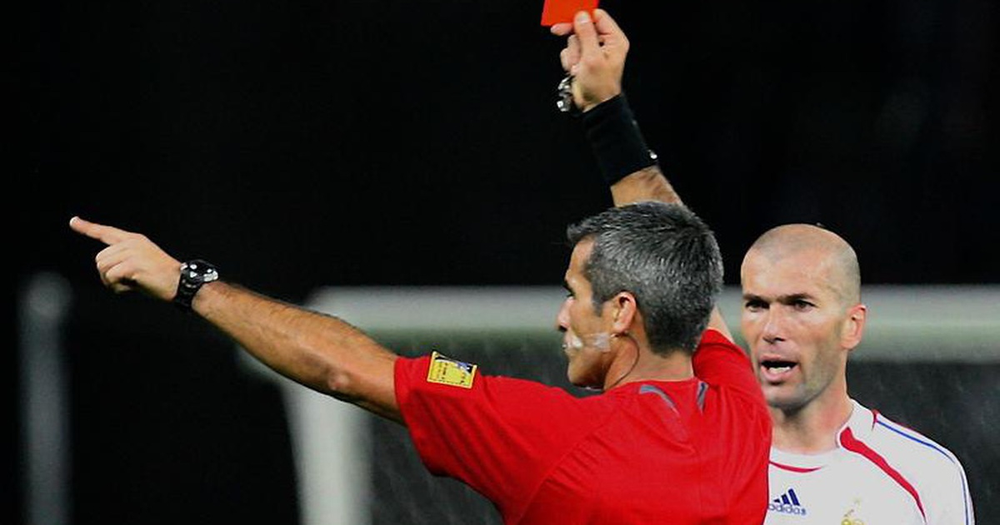

Thẻ đỏ là hình phạt mà trọng tài sử dụng nhằm đảm bảo kỷ luật thi đấu, ngăn chặn các hành vi phạm luật và bạo lực trên sân cỏ. Thẻ đỏ không chỉ đơn thuần là một tấm thẻ màu, mà nó còn mang theo một ý nghĩa tượng trưng cho sự trừng phạt nặng nề đối với những hành vi không thể chấp nhận trong một trận đấu chuyên nghiệp.
“Khi một cầu thủ bị thẻ đỏ, anh ta không chỉ rời bỏ sân cỏ mà còn đánh mất cơ hội góp phần vào chiến thắng của đội mình.”

Lịch sử xuất hiện và phát triển của thẻ đỏ
Khái niệm thẻ đỏ là gì đã được giới thiệu lần đầu tiên trong bóng đá vào những năm 1960. Trước đó, các trọng tài thường chỉ dùng cảnh cáo bằng lời nói hoặc ra hiệu bằng tay mà không có biện pháp xử lý trực quan như tấm thẻ. Sự ra đời của thẻ đỏ được xem là một bước đột phá quan trọng để làm rõ hình thức phạt và đảm bảo sự công bằng trong thi đấu.
Thẻ đỏ được phát minh bởi trọng tài người Anh – Ken Aston – vào năm 1966, trong bối cảnh của một giải đấu World Cup. Sự sáng tạo này được ra đời nhằm giải quyết vấn đề giao tiếp giữa trọng tài và cầu thủ khi cảnh báo về hành vi vi phạm. Trước đó, nhiều tình huống gây tranh cãi vẫn xảy ra do việc không rõ ràng trong việc xử phạt.
Các điểm nổi bật trong quá trình phát triển của thẻ đỏ bao gồm:
Mục tiêu của sự ra đời:
Phát triển qua các giải đấu lớn:
Sự thay đổi trong nhận thức của người hâm mộ:
“Việc giới thiệu thẻ đỏ không chỉ nâng cao chất lượng của trò chơi mà còn giúp các trọng tài có công cụ rõ ràng để xử lý các tình huống phức tạp trên sân.”
Thẻ đỏ đã trải qua nhiều cải tiến về quy định và cách thức sử dụng. Ban đầu, việc giải thích lý do đưa ra thẻ đỏ không được minh bạch, tuy nhiên, dần dần, các liên đoàn bóng đá quốc tế đã đưa ra các hướng dẫn cụ thể, giúp cho mỗi hình phạt đều được đưa ra kèm theo lý do rõ ràng. Điều này không những giúp người chơi hiểu được lỗi của mình mà còn tăng cường tính công bằng trong thi đấu.
Các cải tiến đáng chú ý:
Có nhiều tình huống trong một trận đấu có thể dẫn đến việc trọng tài rút thẻ đỏ. Dưới đây là một số tình huống phổ biến nhất:
Hành vi bạo lực:
Phạm lỗi nguy hiểm:
Hành vi không tôn trọng trọng tài:
Khi trọng tài quyết định rút thẻ đỏ, quy trình xử lý sẽ được thực hiện theo các bước cụ thể dưới đây:
Thông báo từ trọng tài:
Trọng tài sẽ rút thẻ đỏ và thông báo rõ ràng cho cầu thủ về lỗi vi phạm.
Cầu thủ bị truất quyền thi đấu:
Hình phạt kèm theo:
Một số quy tắc chi tiết được thực hiện qua các bước sau:
Cảnh cáo trước:
Nếu một lỗi nhỏ được lặp lại, trọng tài có thể sử dụng thẻ vàng như một cảnh báo. Nếu cầu thủ tiếp tục vi phạm, thẻ đỏ sẽ được áp dụng ngay lập tức.
Xử lý trực tiếp:
Trong những trường hợp vi phạm cực đoan, trọng tài có thể bỏ qua bước cảnh cáo và rút thẻ đỏ ngay từ đầu.
Thông báo lý do:
Sau trận đấu, trọng tài và ban kiểm soát sẽ giải trình lý do đưa ra quyết định, đảm bảo tính minh bạch và công bằng.
Sử dụng thẻ đỏ mang lại nhiều lợi ích không chỉ cho trọng tài mà còn cho toàn bộ đội bóng và người hâm mộ:
Bảo vệ tinh thần thi đấu:
Việc rút thẻ đỏ làm giảm các hành vi bạo lực, giúp duy trì tinh thần fair-play.
Tăng tính công bằng:
Các quyết định xử phạt trở nên rõ ràng, minh bạch và được giải thích đầy đủ.
Khuyến khích kỷ luật:
Biện pháp xử phạt nghiêm khắc giúp các cầu thủ và huấn luyện viên ý thức hơn trong cách thi đấu và ứng xử trên sân.
Khi một cầu thủ bị rút thẻ đỏ, đội bóng phải đối mặt với nhiều thách thức:
Mất cân bằng đội hình:
Đội bóng sẽ thi đấu thiếu ít nhất một cầu thủ, dẫn đến sự mất cân bằng về phòng ngự hoặc tấn công.
Thay đổi chiến thuật:
Huấn luyện viên phải điều chỉnh chiến thuật ngay lập tức. Các phương án thay thế như:
Tâm lý thi đấu:
Sự rút thẻ đỏ không chỉ tác động đến chiến thuật mà còn ảnh hưởng đến tinh thần thi đấu của toàn đội. Nhiều cầu thủ có thể cảm thấy mất tự tin hoặc áp lực khi đối mặt với tình huống này.
Các hình phạt bằng thẻ đỏ thường đi kèm với những hậu quả nặng nề cho cầu thủ bị xử lý:
Mất cơ hội thi đấu:
Cầu thủ bị thẻ đỏ thường phải nghỉ thi đấu ít nhất trong một trận đấu tiếp theo hoặc thậm chí nhiều trận.
Ảnh hưởng đến danh tiếng:
Một cầu thủ thường xuyên bị thẻ đỏ có thể bị ghi nhận như một nhân tố tiêu cực, ảnh hưởng đến sự nghiệp và mối quan hệ với huấn luyện viên cũng như đồng đội.
Hậu quả về tài chính:
Ngoài hình phạt thi đấu, một số liên đoàn bóng đá còn áp dụng hình phạt tiền đối với các trường hợp vi phạm nghiêm trọng.
Thẻ đỏ không chỉ ảnh hưởng về mặt kỷ luật mà còn định hình phong cách chơi bóng của các cầu thủ:
Kỹ thuật và tư duy thi đấu:
Các cầu thủ thường cố gắng hạn chế rủi ro vi phạm để tránh bị phạt thẻ đỏ, từ đó cải thiện kỹ thuật và sự tinh tế trong cách xử lý tình huống trên sân.
Sự thay đổi trong cách ứng xử:
Việc biết rõ hậu quả của thẻ đỏ kích thích cầu thủ chủ động hơn trong việc kiểm soát hành vi và tương tác với đồng đội cũng như đối thủ.
Áp lực từ phía ban huấn luyện:
Huấn luyện viên thường đưa ra các bài tập và chiến thuật nhằm nâng cao ý thức thi đấu, giảm thiểu tình huống phạm lỗi dẫn đến thẻ đỏ.
Một số điểm so sánh cơ bản giữa thẻ đỏ và thẻ vàng như sau:
| Tiêu chí | Thẻ vàng | Thẻ đỏ |
|---|---|---|
| Mục đích | Cảnh cáo và nhắc nhở hành vi vi phạm nhỏ | Xử phạt nặng đối với hành vi nghiêm trọng |
| Hình phạt | Nếu nhận đủ 2 thẻ vàng sẽ thành thẻ đỏ | Rời bỏ sân ngay lập tức, có thể bị đình chỉ trận |
| Tác động tâm lý | Cảnh giác, cải thiện thái độ | Mất tự tin, ảnh hưởng đến tinh thần thi đấu |
| Sự điều chỉnh chiến thuật | Ít ảnh hưởng trực tiếp đến đội hình | Yêu cầu điều chỉnh chiến thuật ngay lập tức |
Quy trình áp dụng thẻ vàng và thẻ đỏ được phân định rõ ràng trong luật bóng đá hiện đại:
Thẻ vàng:
Thẻ đỏ:
Sự kết hợp giữa thẻ vàng và thẻ đỏ giúp bảo đảm tính công bằng và giảm thiểu xô xát không cần thiết trên sân cỏ. Một số lợi thế và hạn chế gồm:
Lợi thế của thẻ vàng:
Lợi thế của thẻ đỏ:
Hạn chế:
Thẻ đỏ có thể thay đổi hoàn toàn diễn biến của một trận đấu. Khi một cầu thủ bị phạt, đội bóng phải nhanh chóng thích nghi và điều chỉnh chiến thuật thi đấu.
Trong lịch sử bóng đá, đã có nhiều tình huống nổi bật liên quan đến thẻ đỏ ảnh hưởng đến kết quả cuối cùng của trận đấu:
Trận đấu bất ngờ:
Một đội bóng khi mất một cầu thủ chủ chốt do thẻ đỏ thường phải thay đổi lối chơi, từ tấn công sang phòng ngự để giữ vững thế trận.
Tâm lý đội bóng:
Hậu quả tâm lý khi mất đi một thành viên có thể làm giảm tinh thần thi đấu, dẫn đến lỗi phối hợp và mất kiểm soát bóng.
Phản công từ đối thủ:
Đối thủ dễ dàng khai thác khoảng trống được tạo ra, sử dụng các đợt phản công nhanh để ghi bàn quyết định.
Khi đối diện với thẻ đỏ, huấn luyện viên thường có một số chiến thuật ứng phó cụ thể, bao gồm:
Trọng tài đóng vai trò then chốt khi áp dụng thẻ đỏ. Việc họ quyết định dựa trên các tình huống cụ thể và cảm quan cá nhân đòi hỏi sự cân bằng tuyệt đối giữa tính khách quan và linh hoạt.
“Một trọng tài tốt không chỉ biết cách phạt mà còn phải hiểu được tâm lý và chiến thuật của trận đấu, từ đó đưa ra quyết định đúng đắn nhất.”
Qua bài viết, hy vọng bạn đã hiểu rõ hơn về thẻ đỏ là gì và vai trò quan trọng của nó trong bóng đá hiện đại. Các quy định, cách sử dụng và ảnh hưởng của thẻ đỏ đến trận đấu đều cho thấy đây là công cụ không thể thiếu để giữ gìn kỷ luật và fair-play trên sân cỏ. Ngoài ra, việc so sánh thẻ đỏ với các loại thẻ khác cũng giúp người hâm mộ nắm bắt được bối cảnh và tác động của các quyết định trọng tài trong những tình huống quan trọng.
Tổng kết lại, thẻ đỏ